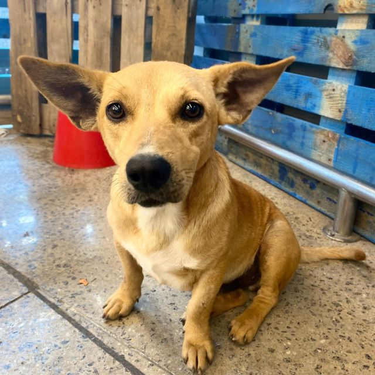
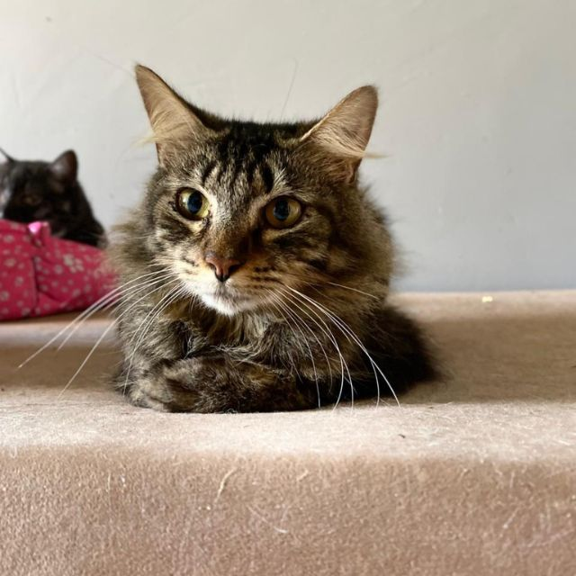

Transforme Vidas com um Gesto de Amor
O Instituto Fica Comigo resgata animais abandonados e vítimas de maus-tratos há 15 anos. Nesse tempo, salvamos centenas de vidas que, sem nossa ajuda, teriam um destino cruel. Mas essa é uma jornada árdua e cheia de desafios. Todos os dias, precisamos de mantimentos básicos como ração, medicamentos e produtos de higiene. Além disso, nossos animais resgatados, que já sofreram tanto, precisam de carinho, amor e cuidados constantes para recuperar a confiança e a alegria de viver.
Infelizmente, muitos desses animais chegam até nós em condições extremamente precárias, física e emocional. Alguns passaram fome, outros enfrentaram a violência e todos carregam marcas profundas do abandono. Mesmo com todo nosso esforço, sabemos que ainda há muito a ser feito. Nossas instalações precisam de reparos frequentes e os custos com tratamentos veterinários e manutenção crescem a cada dia.
É por isso que precisamos de você. Com sua ajuda, podemos continuar oferecendo dignidade, segurança e amor a esses animais que só querem uma segunda chance. Doe qualquer quantia pelo nosso Pix ou contribua com rações e mantimentos. Cada doação, por menor que seja, faz uma grande diferença e nos ajuda a manter vivo o sonho de um futuro melhor para eles.
Ajude-nos a continuar mudando vidas. Porque juntos, podemos fazer muito mais!
Doe qualquer valor via PIX
Banco: SICRED
Chave PIX CNPJ: 24.688.523/0001-30
Nome: Fica Comigo
Banco: SANTANDER
Chave PIX Tel: (41) 99658-9535
Nome: Fica Comigo
Você também pode nos ajudar com mantimentos
Mensalmente, precisamos de diversos itens para a manutenção do nosso abrigo, veja como é fácil doar!
Quero fazer uma doação

Cachorros
Rações
✅ Ração UNNA Cães Adultos
✅ Ração UNNA Cães Filhotes
Antipulgas
✅ CREDELI 11-22kg;
✅ SIMPARIC 10,1-20kg;
✅ BRAVECTO 10-20kg;
✅ CANIS FULL SPOT 11-25kg.
Acessórios
✅ Pratinhos de comida e água (Metal leve);
✅ Coleiras (Diversos tamanhos, mas estamos precisando para porte médio e grande);
✅ Cobertores microfibra.
Medicamentos
✅ Qualquer tipo de medicamento e o que não usarmos, doaremos a instituições que precisam.

Gatos
Rações
✅ Ração UNNA Gatos Adultos
Antipulgas
✅ REVOLUTION 5,1-10kg;
✅ COMFORTIS 5,4-11kg;
✅ CREDELI 2,1-8kg.
Areia para gatos
✅ Pipicat;
✅ Xoxero;
✅ Natural.
Acessórios
✅ Pratinhos de comida e água (Metal leve);
✅ Cobertores microfibra.
Medicamentos
✅ Qualquer tipo de medicamento e o que não usarmos, doaremos a instituições que precisam.